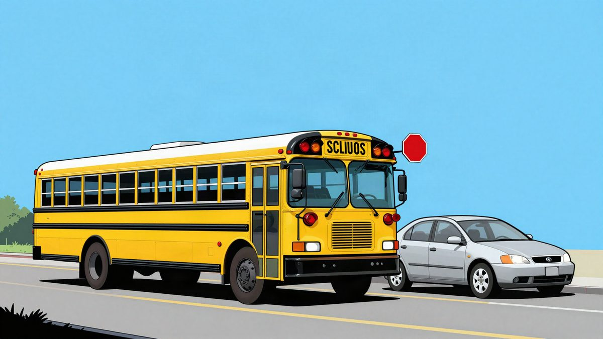

BusPatrol ima AI kamere na oko 35.000 školskih autobusa u SAD-u, a njihov učinak na sigurnost je sporan

BusPatrol je AI kamere ugradio u oko 35.000 školskih autobusa u 24 savezne države SAD-a. Proizvođači tvrde da 98 posto kažnjenih vozača ne ponavlja prekršaj, no istraživanje Type Investigationsa i Bloomberga u okrugu Montgomery ne nalazi dokaze da se broj sudara smanjio. Cijena i dostupnost izvan SAD-a nisu poznate.
BusPatrol je svoje kamere ugradio u oko 35.000 školskih autobusa u 24 savezne države SAD-a. Kamere s AI-jem prepoznaju vozače koji ne stanu kad autobus izvuče sklopivi znak za zaustavljanje, dok djeca ulaze u vozilo ili izlaze iz njega. Kazna se, prema izvorima, izdaje ručno na temelju snimke.
Postupak ima nekoliko koraka. Kad sustav zabilježi prekršaj, podatke pregleda čovjek i sastavi paket dokaza za policiju. Policija ga pregleda, a kazna se na kraju šalje poštom.
BusPatrol nije jedini u tom poslu. AngelTrax je nedavno najavio partnerstvo s tvrtkom Teton Stage Lines iz Idahoa, koja iznajmljuje autobuse. Katherine Tolar, potpredsjednica za operacije u AngelTraxu, tvrdi da 98 posto uhvaćenih vozača nakon kazne više ne ponavlja prekršaj, što prema njezinim riječima pokazuje da kamere mijenjaju ponašanje vozača.
Sličnu tvrdnju iznio je i Verra Mobility. U kolovozu je objavio da 98 posto kažnjenih vozača nema novu kaznu i da se broj kazni tijekom školske godine smanjio za 70 posto.
Što kažu neovisni podaci
To su tvrdnje samih proizvođača, a istraživanje Type Investigationsa i Bloomberga daje drukčiju sliku. U okrugu Montgomery u Marylandu BusPatrol je izdao 375.000 kazni u ukupnom iznosu od 92 milijuna dolara (oko 85 milijuna eura). Prema nalazima istraživanja, u evidenciji okruga nema dokaza da se broj sudara u blizini zaustavljenih školskih autobusa smanjio.
Ni podjela novca nije ujednačena. Od 2019. do 2024. BusPatrol je zadržao oko 40 milijuna dolara (oko 37 milijuna eura) naplaćenih kazni, a okrug 18,5 milijuna dolara (oko 17 milijuna eura).
Privatnost
Spoj prometnih kamera i AI nadzora u SAD-u izaziva oprez, pogotovo nakon slučaja Flock, sustava čijim su podacima policajci mogli pristupati i zlouporabljivati ih. Koliko je poznato, takav pristup kamerama na školskim autobusima nije moguć.
Izvor: Futurism